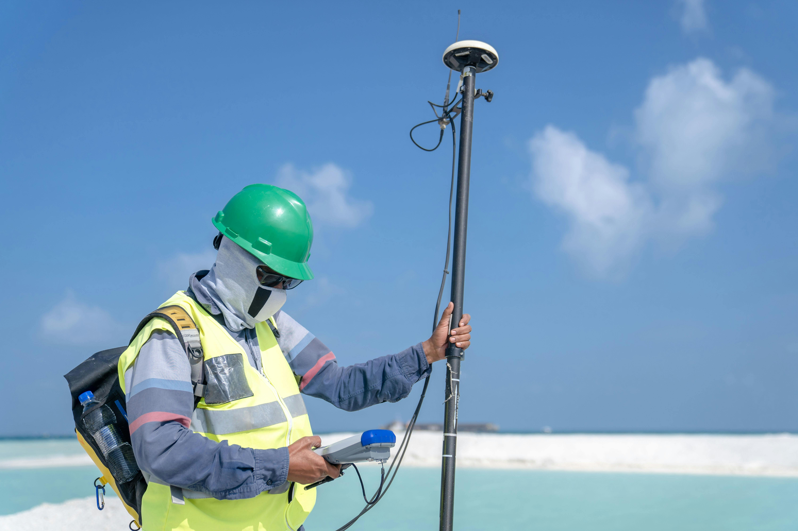

Specialised expertise across commodities, project stages, technical evaluation, and strategic opportunity screening.
We provide specialized expertise across a diverse range of mineral commodities, deposit types, and acquisition-screening opportunities.
Orogenic gold systems, epithermal deposits, porphyry-related gold, and placer exploration
Copper, zinc, lead deposits including VMS, SEDEX, porphyry, and skarn systems
Lithium, rare earths, cobalt, nickel, and other battery and technology metals
Construction materials, specialty minerals, and bulk commodity exploration
Supporting projects from early exploration through development and production
Experience across diverse geological terranes and mining jurisdictions, including Indian mineral provinces and international project environments.
Work aligned with international best practices, reporting standards (JORC, NI 43-101), and professional geological codes of conduct.
Understanding of regulatory frameworks, permitting requirements, and operational contexts across different mining regions.
Application of geochemical analysis, geophysical methods, remote sensing, GIS, and 3D geological modeling software.
Integration of geological, geochemical, geophysical, and structural data for evidence-based targeting and evaluation.
Preparation of technical reports, geological assessments, and stakeholder presentations meeting industry standards.
Eldora combines geological expertise, exploration experience, and mining industry knowledge to deliver practical, technically sound solutions across commodity types, project stages, and global contexts.
Whether you're advancing an early-stage prospect, evaluating a development opportunity, or seeking strategic technical input, our team brings the capability, professionalism, and industry understanding to support your objectives.
Eldora applies geological insight, project evaluation discipline, commodity knowledge, and strategic screening criteria to identify promising acquisition opportunities that can strengthen portfolio quality and support long-term growth.
Review of geology, exploration maturity, resource potential, infrastructure context, and data quality.
Assessment of alignment with Eldora’s vision, commodity focus, jurisdictional preferences, and long-term value objectives.